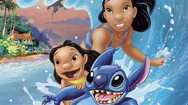
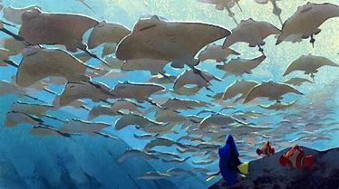
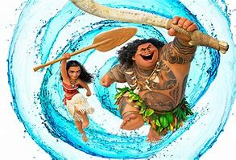

Family Friendly Films
The best movies out there right now for the whole family.
Lilo and Stitch

Platform: Hulu, Amazon, Itunes
Rating: 86%
Rated: PG
Synoposis: Stitch becomes the mischeivous friend of a girl named Lilo and learns about loyalty, and 'ohana, the Hawaiian tradition of family.
Finding Dory

Platform: Netflix, Amazon, ITunes, Youtube
Rating: 94%
Rated: PG
Synoposis: The friendly but forgetful blue tang fish, Dory, begins a search for her long-lost parents, and everyone learns a few things about the real meaning of family along the way.
Moana

Platform: Youtube, Amazon, Itunes
Rating: 96%
Rated: PG
Synoposis: In Ancient Polynesia, when a terrible curse incurred by the Demigod Maui reaches Moana's island, she answers the Ocean's call to seek out the Demigod to set things right.